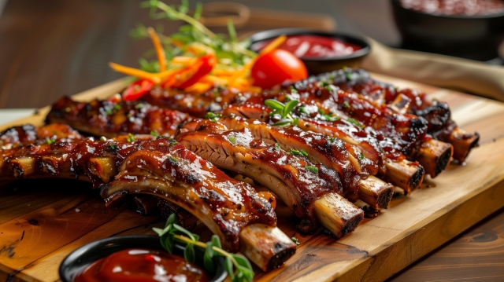

Homemade BBQ Sauce

10-Minute Barbecue Sauce
If you're looking for a classic homemade BBQ sauce
that doesn't take 30 hours of your precious time to make, and it
doesn't cost 50x more than the real thing, look no further!
With just 10 pantry staples you can make this delicious BBQ sauce
under 10min!
Ingredients
- 1 1/2 cups brown sugar
- 1 1/2 cups ketchup
- 1/2 cup red wine vinegar
- 1/2 cup water
- 1 tbsp Worcestershire sauce
- 2 1/2 tbsp dry mustard
- 2 tsp smoked paprika
- 2 tsp salt
- 1 1/2 tsp black pepper
- a couple dashes of hot pepper sauce
Instructions
- Gather all the ingredients.
- Combine everything in your blender jar. Blend it well until smooth.
- Enjoy!
Check out my other recipes here! Home